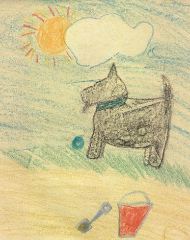

Lost
Lost. A two-year old Scottish Terrier. He has black fur
and green eyes. He was las seen by St. Paul's School on Kansas Avenue. His
name is Blacky. He likes to chase rubber balls. Reward. If found, please
call Adam Howard at 744-1610.